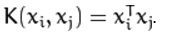
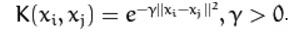
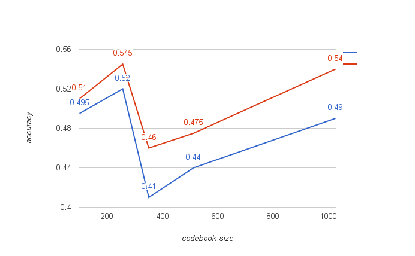

Image Classification
Dai Bo 1155053920
Introduction
In this project, we implement an image classification system based on multiple features and SVM.
Particularly, we use various coding schemes and pooling methods to get the best representation of one image, and apply kernel SVM to improve the classification accuracy.
Pipeline
- Extract features from image (choice: SIFT/SURF)
- Codebook generation (K-means)
- Feature Coding (choice: VQ coding/LLC coding)
- Feature Pooling (choice: sqrtPooling/maxPooling/absolutePooling/gridSumPooling/gridMaxPooling)
- SVM training (choice: linear-svm/kernel-svm)
Methodology
Feature Extraction
In this project, we mainly use two kinds of feature descriptors, namely SIFT and SURF.
Dense keypoints are sampled from each image, and a sift descriptor and a surf descriptor are computed for each keypoints. In this phase, each image is represented by a set of descriptors on dense keypoints.
Feature Coding
We use two kinds of coding schemes, one is the typical VQ coding and another is the famous LLC coding. Details are included in Feature Coding.
Feature Pooling
Five pooling methods are included in this project, among which two of them maintain spatial information while the rest only maintain scale information. See more in Feature Pooling.
Classifier Training
In this project we use SVM as our classifier, and both linear and kernel based svm are used. Particularly, we use RBF as our kernel, and we use cvSVM's train_auto method to automatically choose parameters.


Linear and RBF kernels.
Experiment
Codebook Size and Classifier Type
In this experiment, we fix pooling method to sqrt pooling, and coding scheme to VQ coding, while changing codebook's size as well as type of the classifier in order to find a good combination.

The accuracy of different codebook size with different classifier. The red line is RBF-svm while the blue line is linear svm.
From the curve we can see, using RBF kernel for svm training can improve the accuracy whatever the codebook's size is. On the other hand, among all chosen size of codebook, 256 and 1024 are the best two in terms of accuracy.
Pooling Method
In this experiment, we fix codebook's size to 256, coding scheme to VQ coding and classifier to linear svm, while changing pooling methods in order to find the most effective one.
| method | max pooling | sqrt pooling | absolute pooling | grid sum pooling | grid max pooling |
| accuracy | 0.44 | 0.52 | 0.49 | 0.53 | 0.535 |
While the results show that the best pooling method is grid max pooling method which maintains spatial information. However, sqrt pooling shows considerable result while saving a lot of memory, being a good trade-off choice.
Coding Scheme
We fix other choice while changing the coding scheme, and the results are listed below
| coding scheme | codebook size: 256 | codebook size: 1024 |
| VQ coding | 0.545 | 0.54 |
| LLC coding | 0.55 | 0.56 |
From the results we can see, LLC coding is better than VQ coding.
Conclusion
Via a lot of experiments, we found the best configuration is:
- Feature type: SIFT + SURF
- Codebook size: 1024
- Coding scheme: LLC Coding with K=5
- Pooling method: Grid Max Pooling
- Classifier: RBF-based SVM
which has accuracy of 0.605 on the validation set.
Reference
- [0] Wang, Jinjun, et al. Locality-constrained linear coding for image classification. CVPR, 2010.
- [1] H. Bay, T. Tuytelaars and L. V. Gool SURF: Speeded Up Robust Features, ECCV, 2006.
- [2] Lindeberg, Tony. Scale invariant feature transform.